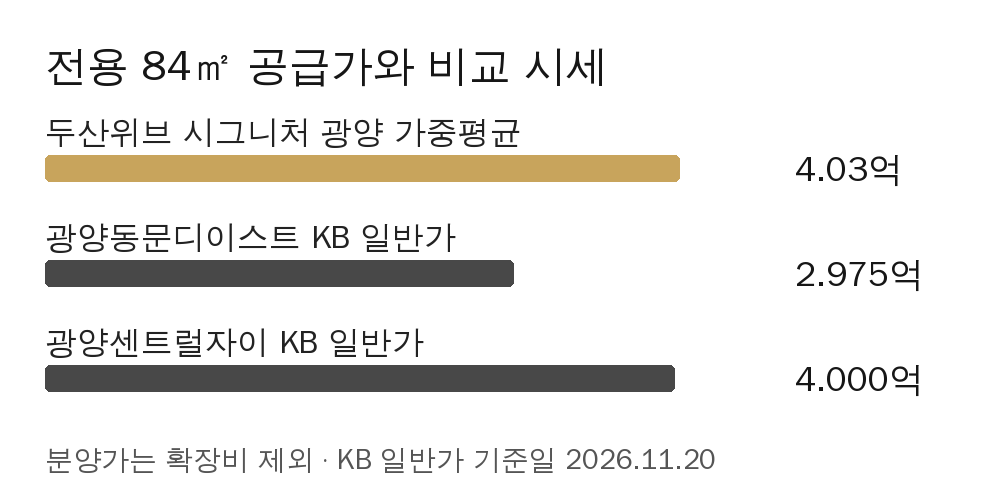
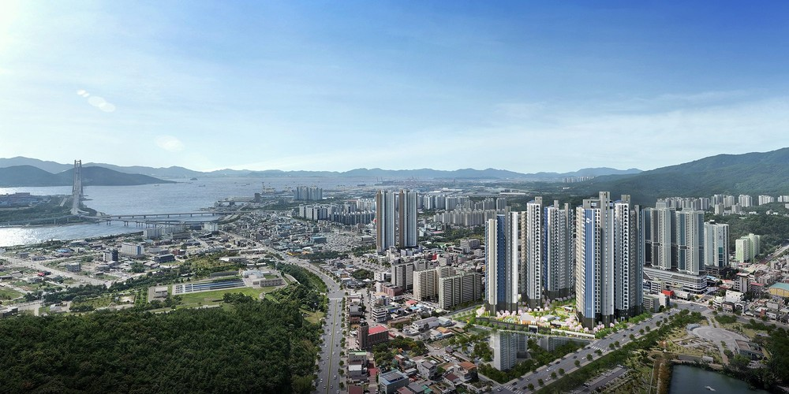
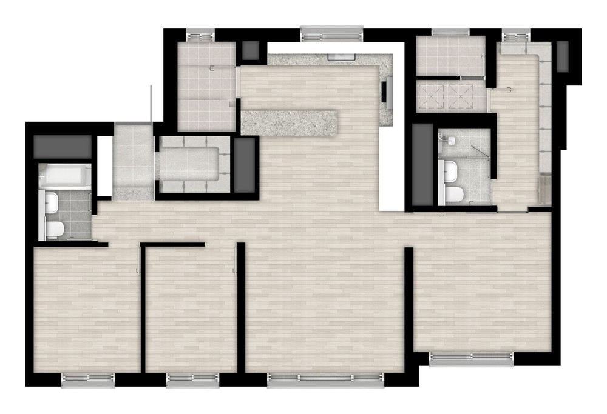
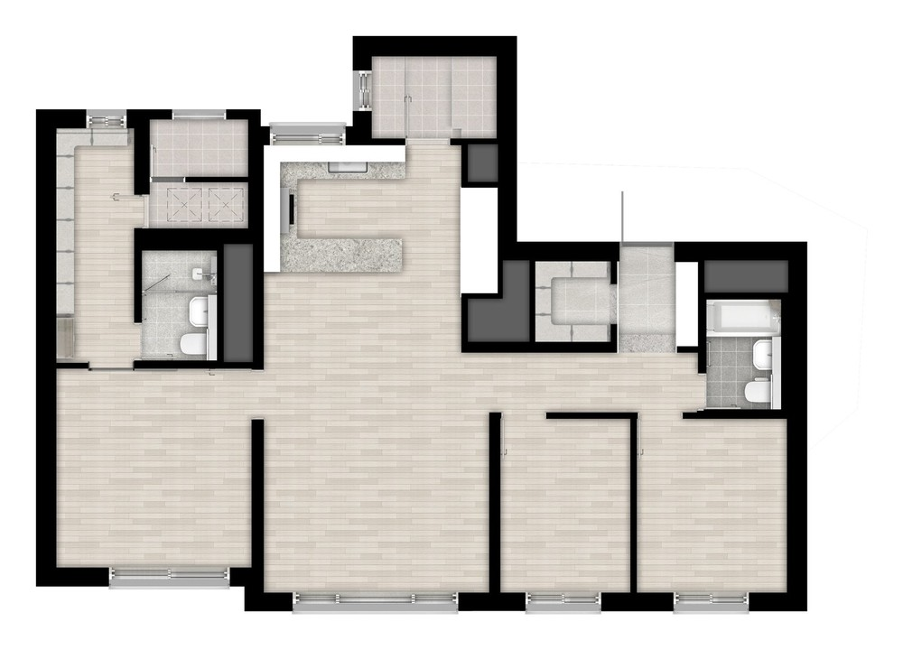
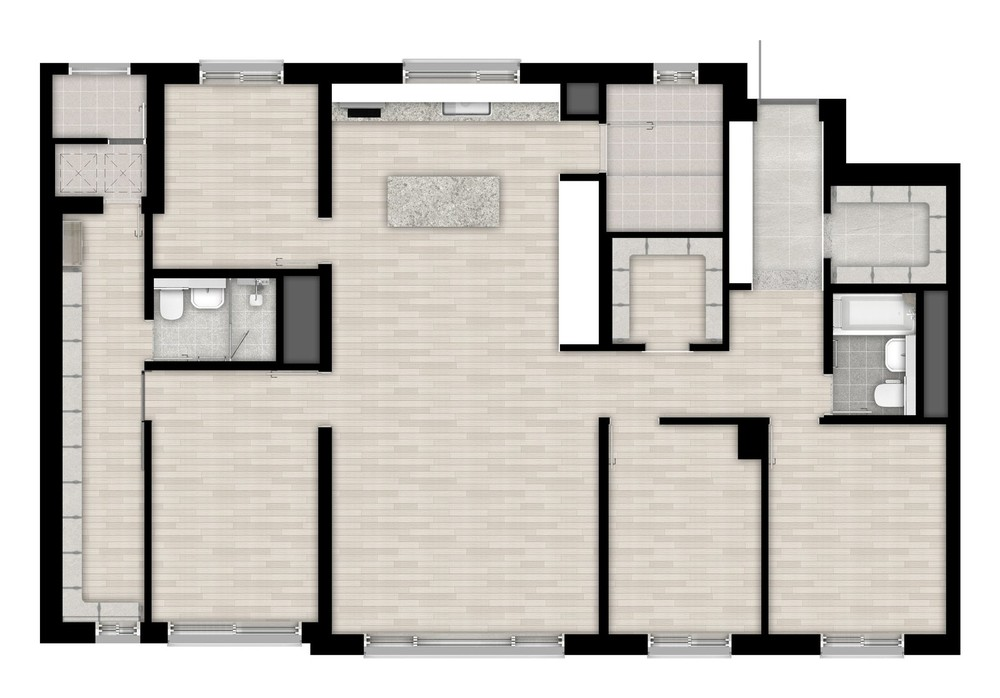

두산위브 시그니처 광양 | 84㎡ 평균 4.03억, 평면·청약 일정
1. 핵심 요약
두산위브 시그니처 광양은 광양시 중동 1294·1294-1번지에서 120세대를 분양한다. 전용 84㎡ 46세대의 공급가를 가중평균하면 4.03억 원이며, 특별공급은 11월 30일이다.
| 항목 | 값 |
|---|---|
| 브동산 분석 적정가격 | 산출 보류 |
| 84㎡ 가중평균 공급가 | 4.03억 원 |
| 예상 프리미엄 | 산출 보류 |
| 비교단지 후보 | 전용면적·KB 일반가 |
|---|---|
| 광양동문디이스트 | 84.9681㎡ · 2.975억 |
| 광양센트럴자이 | 84.9957㎡ · 4.00억 |
| 이편한세상광양 | 84.9700㎡ · 2.65억 |
| 후보 | 선정·제외 근거 |
|---|---|
| 광양동문디이스트 | 2023.01 준공 · 1,114세대. 인접 마동에 위치한 1,000세대 이상 준공 단지. |
| 광양센트럴자이 | 2022.08 준공 · 704세대. 인접 성황동의 준공 대단지. |
| 이편한세상광양 | 2016.06 준공 · 440세대. 같은 중동 사례. 500세대 기준에 미달해 참고용으로 남겼다. |

비교단지 가격은 2026년 11월 20일 조회한 KB 일반가다. 브동산 모형은 입지 40점·브랜드 20점·상품성 40점을 합산한다. 대상과 비교단지의 점수 차이 1점당 시세에 1%를 가감하며 상하한은 20%다. 여기에 준공월과 대상의 입주 예정월 차이로 계산한 연식 배율을 곱하고, 두 보정가의 평균을 적정가로 산정한다.
| 비교단지 | 준공 차이 | 연식 배율 |
|---|---|---|
| 광양동문디이스트 | 67개월 | ×1.0670 |
| 광양센트럴자이 | 72개월 | ×1.0720 |
입지·상품성 세부 평점과 신규 분양 비교 사례의 추가 검증이 남아 있다. 적정가격·예상 프리미엄은 평점이 확정되면 계산한다.
2. 입지 분석
중마 생활권에 위치한다. 공고에는 광양중앙초 배치가 가능하다고 되어 있으나 수용 여건에 따라 바뀔 수 있다. 호수공원 조망은 배치와 동·층·향에 따라 달라진다.
3. 상품 분석
| 항목 | 공고 내용 |
|---|---|
| 위치 | 광양시 중동 1294·1294-1번지 |
| 전체 규모 | 지하 2층·지상 26~32층, 5개 동 575세대 |
| 이번 공급 | 120세대 · 특별 23 / 일반 97 |
| 시공 | 두산건설 |
| 입주 예정 | 2028년 8월 |
| 납부 비율 | 5% / 60% / 35% |
84㎡는 46세대, 110㎡는 72세대다. 사업주체 자료에는 주차 812면, 건폐율 20.24%로 표기돼 있다. 84C가 26세대로 전용 84㎡ 물량 중 가장 많다.









| 타입 | 공급 | 범위(만원) | 평균(만원) |
|---|---|---|---|
| 66A | 1 | 32,580 | 32,580 |
| 66B | 1 | 33,240 | 33,240 |
| 84A | 9 | 39,620~41,880 | 40,539 |
| 84B | 1 | 42,290 | 42,290 |
| 84C | 26 | 39,060~41,280 | 40,198 |
| 84D | 10 | 38,790~41,810 | 40,307 |
| 110A | 61 | 53,190~57,990 | 57,236 |
| 110B | 11 | 54,130~57,990 | 56,791 |
층 또는 호실별 공급금액에 해당 세대수를 곱해 합한 뒤 총세대수로 나눴다. 발코니 확장비는 66㎡ 1,060만 원 · 84㎡ 1,290만 원 · 110㎡ 1,780만 원이며 유상옵션과 함께 공급금액과 별도다.
4. 공급 분석
공고상 기존 광양시 6개월 이상 거주자 우선이다. 기존 광양시 6개월 미만 및 기존 전남·광주 거주자는 기타지역이다. 전매·재당첨 제한과 거주의무는 공고상 없다.
| 청약 단계 | 날짜 |
|---|---|
| 모집공고 | 11월 20일 |
| 특별공급 | 11월 30일 |
| 1순위 | 12월 1일 |
| 2순위 | 12월 2일 |
| 당첨자 발표 | 12월 8일 |
| 서류접수 | 12월 12~15일 |
| 계약 | 12월 21~23일 |
| 인근 분양 사례 | 공고 시점·최고 공급가 |
|---|---|
| 더샵 광양레이크센텀 1회차 | 2024.01.19 · 84A 3.672억 |
| 광양 푸르지오 센터파크 | 2022년 · 84A 3.89억 |
5. 결론
84㎡는 전용면적이 비슷한 마동·성황동 준공 단지와 함께 보고, 110㎡는 별도의 동면적 비교가 필요하다.
청약홈 모집공고 PDF · 사업주체 분양 홈페이지 · 공고번호 2026000590 · 2026년 11월 20일 확인.